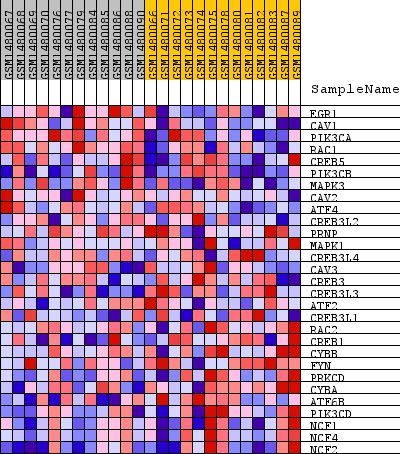
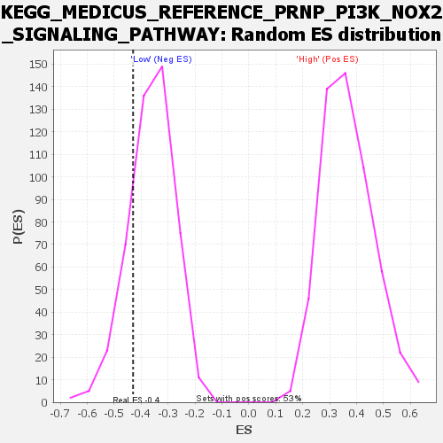

Profile of the Running ES Score & Positions of GeneSet Members on the Rank Ordered List
| Dataset | WG6v3.MRPL3.cls#High_versus_Low.MRPL3.cls#High_versus_Low_repos |
| Phenotype | MRPL3.cls#High_versus_Low_repos |
| Upregulated in class | Low |
| GeneSet | KEGG_MEDICUS_REFERENCE_PRNP_PI3K_NOX2_SIGNALING_PATHWAY |
| Enrichment Score (ES) | -0.430153 |
| Normalized Enrichment Score (NES) | -1.1923041 |
| Nominal p-value | 0.18683651 |
| FDR q-value | 1.0 |
| FWER p-Value | 1.0 |
| SYMBOL | TITLE | RANK IN GENE LIST | RANK METRIC SCORE | RUNNING ES | CORE ENRICHMENT | |
|---|---|---|---|---|---|---|
| 1 | EGR1 | EGR1 | 451 | 0.162 | 0.0655 | No |
| 2 | CAV1 | CAV1 | 510 | 0.150 | 0.1450 | No |
| 3 | PIK3CA | PIK3CA | 1303 | 0.086 | 0.1516 | No |
| 4 | RAC1 | RAC1 | 1763 | 0.069 | 0.1657 | No |
| 5 | CREB5 | CREB5 | 2366 | 0.053 | 0.1637 | No |
| 6 | PIK3CB | PIK3CB | 2615 | 0.048 | 0.1772 | No |
| 7 | MAPK3 | MAPK3 | 2807 | 0.044 | 0.1917 | No |
| 8 | CAV2 | CAV2 | 2849 | 0.044 | 0.2136 | No |
| 9 | ATF4 | ATF4 | 4260 | 0.027 | 0.1554 | No |
| 10 | CREB3L2 | CREB3L2 | 6120 | 0.012 | 0.0664 | No |
| 11 | PRNP | PRNP | 7622 | 0.006 | -0.0078 | No |
| 12 | MAPK1 | MAPK1 | 9936 | -0.003 | -0.1257 | No |
| 13 | CREB3L4 | CREB3L4 | 10513 | -0.005 | -0.1528 | No |
| 14 | CAV3 | CAV3 | 11042 | -0.007 | -0.1764 | No |
| 15 | CREB3 | CREB3 | 11262 | -0.007 | -0.1836 | No |
| 16 | CREB3L3 | CREB3L3 | 12348 | -0.012 | -0.2329 | No |
| 17 | ATF2 | ATF2 | 12576 | -0.013 | -0.2373 | No |
| 18 | CREB3L1 | CREB3L1 | 12749 | -0.014 | -0.2383 | No |
| 19 | RAC2 | RAC2 | 14754 | -0.028 | -0.3263 | No |
| 20 | CREB1 | CREB1 | 15280 | -0.033 | -0.3352 | No |
| 21 | CYBB | CYBB | 17099 | -0.057 | -0.3975 | Yes |
| 22 | FYN | FYN | 17734 | -0.070 | -0.3916 | Yes |
| 23 | PRKCD | PRKCD | 17755 | -0.071 | -0.3538 | Yes |
| 24 | CYBA | CYBA | 17799 | -0.072 | -0.3164 | Yes |
| 25 | ATF6B | ATF6B | 18151 | -0.083 | -0.2892 | Yes |
| 26 | PIK3CD | PIK3CD | 18916 | -0.126 | -0.2593 | Yes |
| 27 | NCF1 | NCF1 | 19078 | -0.145 | -0.1882 | Yes |
| 28 | NCF4 | NCF4 | 19159 | -0.154 | -0.1076 | Yes |
| 29 | NCF2 | NCF2 | 19373 | -0.220 | 0.0025 | Yes |

